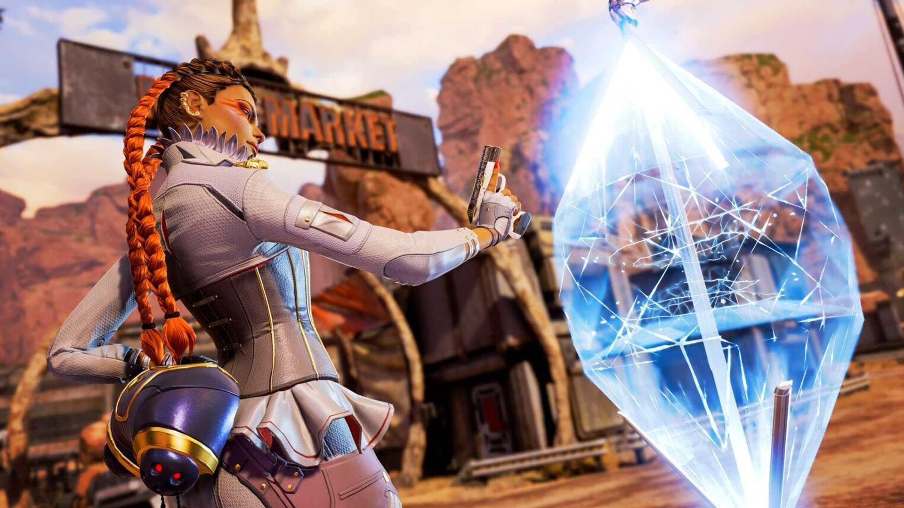

Characters
Find a character you wanna play?
Right now there ar 16 legends in Apex. Each character has a unique passive and tactical ability and an ultimate ability. For example Loba the woman in the first picture can see high level through walls, throw a braclet that allows her to teleport to hard to reach places, and she can place her staff down creating the black market boutique. This is her ultimate ability that gives her and her team to take 2 items from the boutique and these items are in the radius of the characters. Not only can 2 items be taken but the entire team can take as much ammo as they want from the blavk market for free. Next up we have Revenant a robot that is a super assassin. He has an ability that fires a grenade of energy that stops other players from using their tactical and ultimate abilities. This means that the enemy team will have to rely heavly on their aim if they want to beat Revanent. Revanent's ultimate ability is teh death totem that allows him to put a totem on the ground that will give his team a second life. However, this second live only temporary but being given a chance to die and come back gives you and your team some extra time to form a startegy on the enemy. Next up we have Octane who is an adreneline junkie. He can regenrate health when not in a fight and a has a shot of special serum that allows him to run crazy fast. His ultimate ability is throwing down a jump pad that launches anyone who jumps on it extermely far with the option for a double jump. These are just 3 characters out of the incredible roster to choose from. Picking legends that can combine their skills together well is very important when it comes to making a team. All of the diverse abilities and characters gives players the ability to find a legend that fits their play style and a certain role on their team. Mix and match up your team and go become and Apex Predator!
